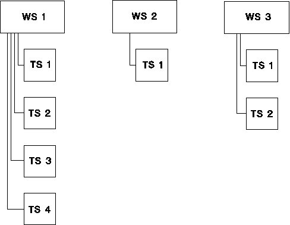

Relationship between waveform sets and timing sets
There are a few dependencies to keep in mind. These relate to:
- Setting up your tests
- Running your tests
Implications when setting up tests
When setting up your test, you can store a number of waveform sets, where each waveform set can contain several timing sets.

The following applies:
At power-up you get one waveform set containing one timing set.
- When the system runs a test, it always uses one waveform set and one timing set.
- A timing set always belongs to one waveform set. You cannot use the same timing set in several waveform sets.
- Each waveform set contains at least one timing set. This is called Timing Set 1 (TS 1).
- Timing sets of the same number belonging to different waveform sets may contain different timing information.
- You can store a maximum of 256 timing sets to a waveform set.
- You can have different waveform sets containing different numbers of timing sets, as indicated by the figure above.
The significance of the primary waveform and timing set
Whenever you execute a test suite, the test system starts testing with the Primary Waveform Set and the Primary Timing Set. Then, if you want to change the timing during test execution, you can switch to different timing sets while your test is running. These other timing sets you use are then not primary timing sets.
You can repeatedly execute the same test (one containing the same vectors) and change to a different primary timing set. This enables you to test your device with relaxed or tight timing, also using different vector rates.
You can use this method to check out various timing parameters of the tested device, or to run binning tests.
Functional changes
- Introduced before SmarTest 6.3.2